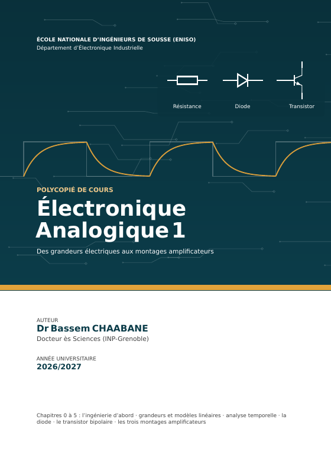

Électronique Analogique 1
Des grandeurs électriques aux montages amplificateurs
Dr Bassem CHAABANE · Département d’Électronique Industrielle
Ce cours suit une seule ligne : poser les lois des circuits, rencontrer la non-linéarité, construire les modèles linéaires, puis les appliquer à la diode et au transistor bipolaire jusqu’aux trois montages amplificateurs. Ce site reprend le texte intégral du polycopié : mêmes sections, figures, équations et exercices corrigés, avec en plus des explorateurs interactifs.
Les outils du circuit
Lois, modèles linéaires et régime temporel
- 0L’ingénierie d’abordLe métier, l’écart entre cours et pratique, et la démarche adoptée par ce cours
- 1Des grandeurs électriques aux modèles linéairesMesurer, poser les lois, rencontrer la non-linéarité, et construire l’outillage linéaireExplorateur · Déplacez le point Q
- 2Analyse temporelle des circuits linéairesDu signal carré au RC, de Fourier à Laplace, puis de l’oscillateur à la rétroactionExplorateur · Le RC face au signal carréExplorateur · La période selon k
Les composants et leurs montages
La diode, le transistor bipolaire et les trois montages
- 3La diode et ses applicationsUn composant, plusieurs modèles : choisir selon la question poséeExplorateur · Redressement et condensateur de filtrageExplorateur · La diode instant par instant
- 4Le transistor bipolaire et sa polarisationDes caractéristiques au point de fonctionnement, puis au modèle petit signalExplorateur · Le point Q du pont diviseur et ses marges
- 5Les trois montages amplificateurs de baseDu transistor bipolaire. Émetteur commun, collecteur commun, base commune : un quadripôle pour chacunExplorateur · Les trois montages entre une source et une chargeExplorateur · Excursion du signal, distorsion et écrêtage
Annexes
Hors des 21 heures du module, à lire à votre rythme
- ANNEXE AAmplificateurs opérationnels et raisonnement dynamiqueSuivre l’évolution d’un circuit avant d’écrire ses règles
- ANNEXE BÉnergie et puissance dans les circuits électroniquesOù passe l’énergie quand un circuit commute
- ANNEXE CRedressement de précision : de la diode qui commute à la rétroactionSuivre un circuit réel plutôt que partir des règles de l’amplificateur idéal
Travaux dirigés
Une série par chapitre, même notation que le cours : cherchez d’abord, puis comparez avec les corrigés. Avant de commencer.
- TD · CHAPITRE 1Des grandeurs électriques aux modèles linéairesÉnoncés ; les corrigés détaillés sont à part
- TD · CHAPITRE 2Analyse temporelle des circuits linéairesÉnoncés ; les corrigés détaillés sont à part
- TD · CHAPITRE 3La diode et ses applicationsÉnoncés ; les corrigés détaillés sont à part
- TD · CHAPITRE 4Le transistor bipolaire et sa polarisationÉnoncés ; les corrigés détaillés sont à part
- TD · CHAPITRE 5Les trois montages amplificateurs de baseÉnoncés ; les corrigés détaillés sont à part
Documents
Polycopié complet (167 pages, 1,4 Mo), travaux dirigés et note SBOA068 : Téléchargements · Bibliographie